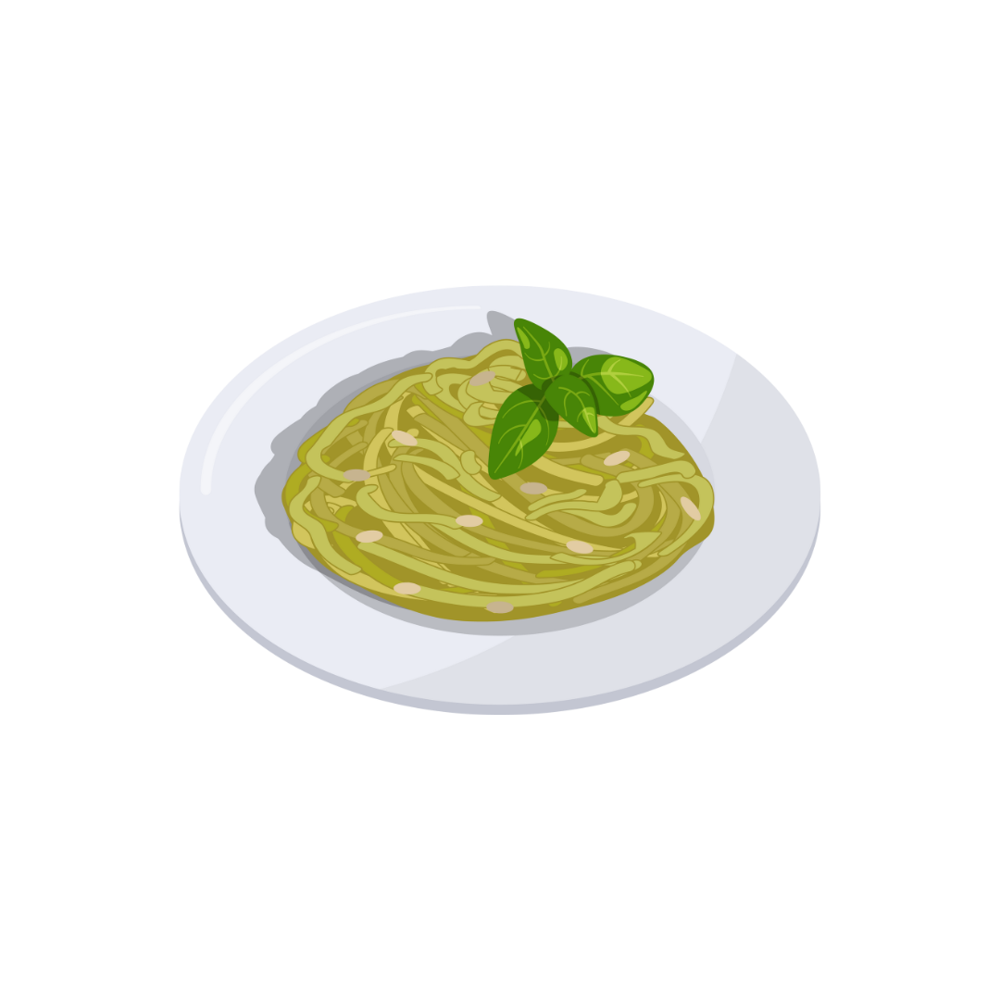

How to Make Pesto Pasta
Estimated time to make your meal: 25 minutes / Serves: 2 people
Steps:
- Blend up a batch of my 6-ingredient basil pesto, or use store-bought pesto in a pinch.
- Cook your pasta in a large pot of salted boiling water according to the package directions.
- Before draining the pasta, reserve some of the starchy pasta water. Then, add 1/4 cup of this pasta water back into the pot with your pesto, and stir to thin the pesto.
- Toss in the cooked pasta, and mix until the pesto thoroughly coats it.
- Add a big handful of arugula and toss until it's barely wilted.
- Finish everything with a big squeeze of lemon, salt, pepper, red pepper flakes, and toasted pine nuts.
- Enjoy your yummy food!